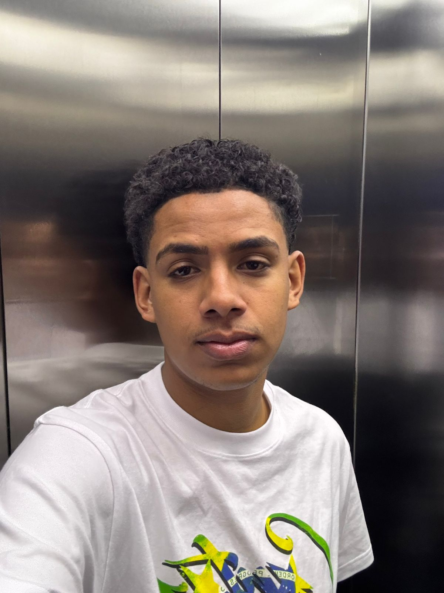

Sobre mim
Sou Técnico em Desenvolvimento de Sistemas e estou buscando minha primeira oportunidade na área de TI. Possuo amplo conhecimento em desenvolvimento WEB.Estou em transição de carreira e motivado a aplicar minhas habilidades em uma empresa que ofereça oportunidades de aprendizado e crescimento profissional.
Habilidades Técnicas
Hard Skills
- HTML, CSS e JavaScript
- Node.js
- Python
- Banco de Dados (MySQL, MongoDB)
- Java
- C#
- Git e GitHub
- Excel
- Inglês Intermediário
Soft Skills
- Comunicação e Trabalho em Equipe
- Resolução de Problemas
- Aprendizado Rápido
- Organização e Gestão de Tempo
- Adaptabilidade
- Empatia e Inteligência Emocional
Formação Acadêmica
Técnico em Desenvolvimento de Sistemas - ETEC de Itaquera (2022-2024)
Git e GitHub - Curso em Vídeo (2025)
HTML5 e CSS3, Módulo 1 ao 5 - Curso em Vídeo (2025)
Contato
(11) 912555919cadualvg@gmail.com
GitHub
Experiência Profissional
Operador de Tinturaria
- Tingimento de peças em fibras sintéticas, operação de máquinas de tingimento, controle de qualidade, manuseio de produtos químicos e aferição de padrões de cores.
Ajudante de Tinturaria (Novembro/2024 – Abril/2025)
- Auxílio no processo de tingimento de tecidos, controle de qualidade e suporte na operação de máquinas industriais.
Auxiliar de Tecelão Júnior
(Outubro/2024 – Novembro/2024)
- Operação de máquinas de tecelagem, garantindo a qualidade da produção e manutenção preventiva.
Jovem Aprendiz
(Abril/2024 – Outubro/2024)
- Aprendizado e suporte em diversas etapas do processo produtivo da indústria têxtil.
Atualmente, estou em busca da minha primeira oportunidade na área de TI. Estou aberto a estágios e posições júnior que me permitam aplicar meus conhecimentos e aprender com profissionais experientes.